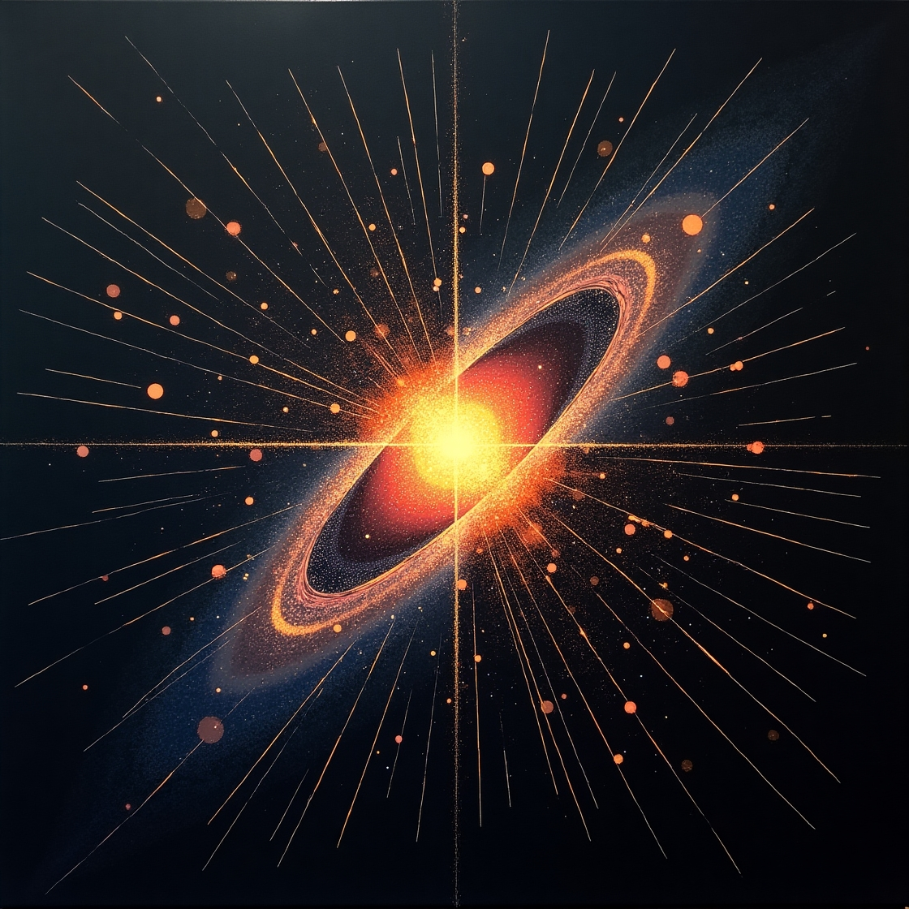
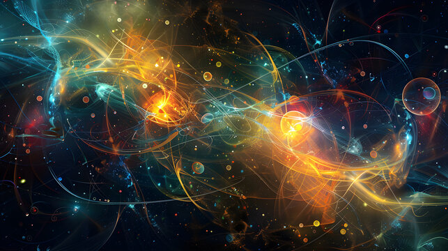
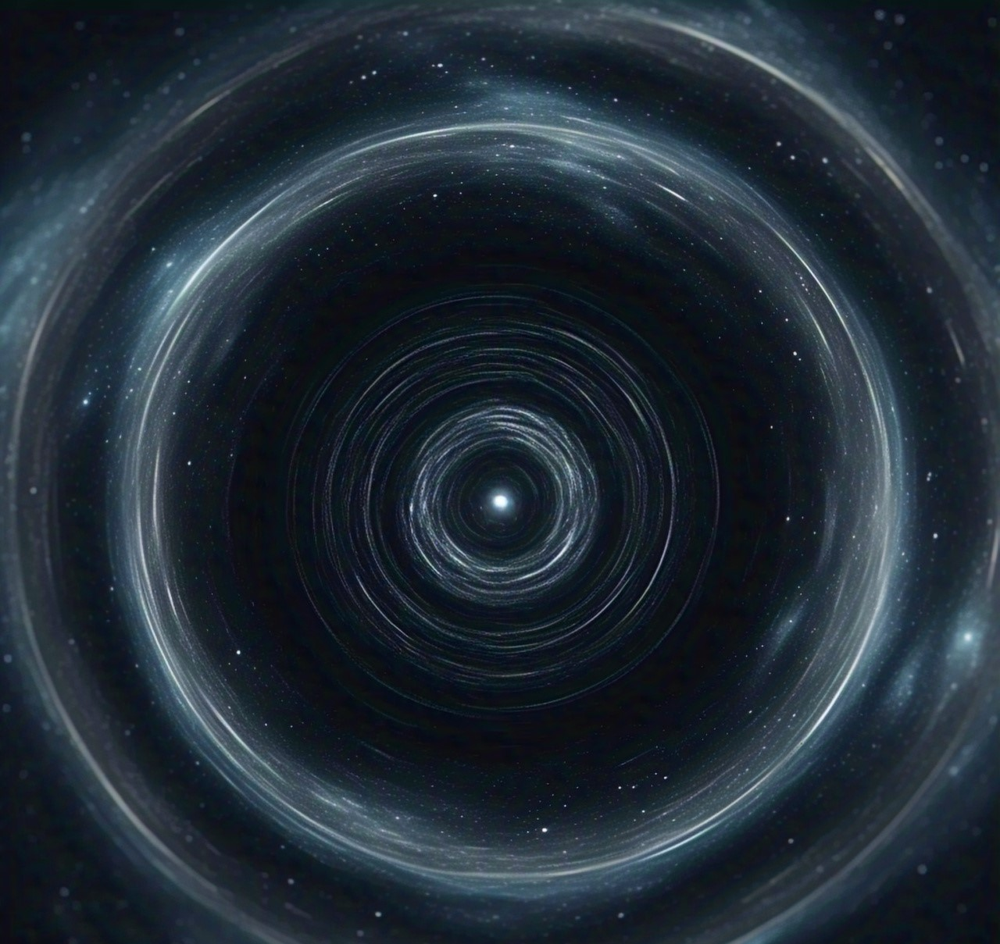
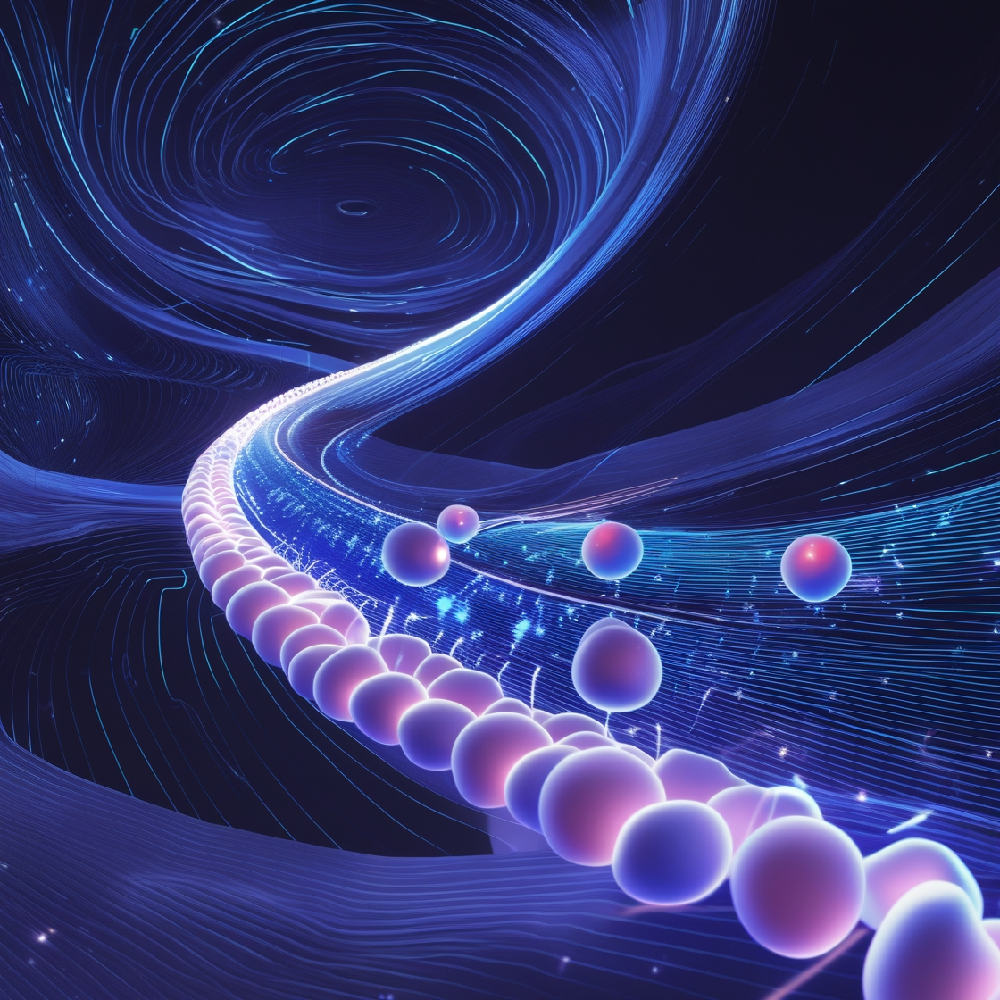
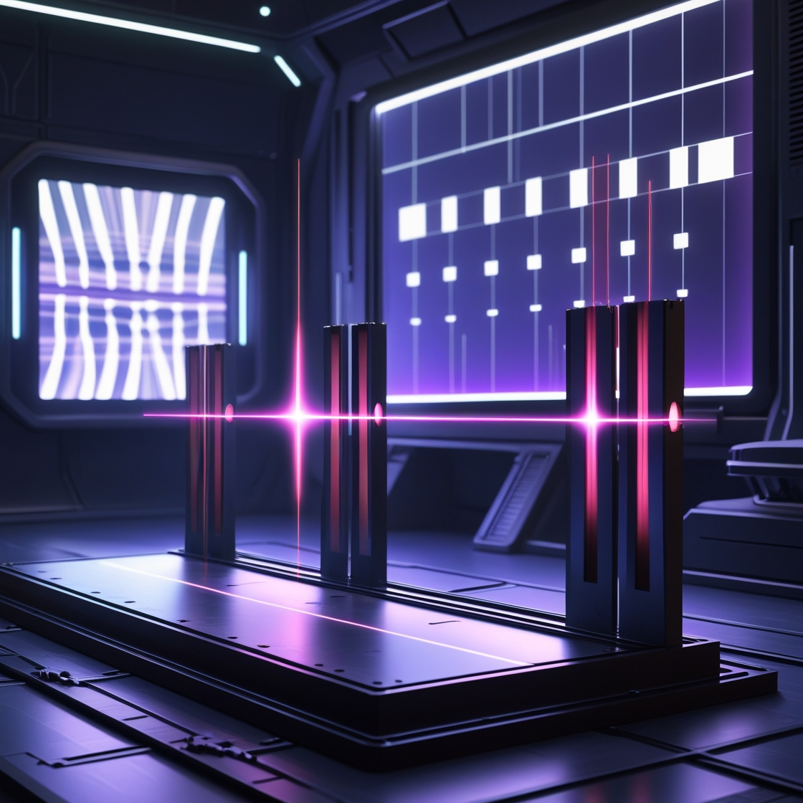

Bem-vindo ao Universo Quântico
Descubra os mistérios do Modelo Padrão e explore as partículas e forças que regem o cosmos.
Partículas Fundamentais
O Modelo Padrão é uma das teorias mais elegantes e completas da física moderna. Ele descreve os blocos fundamentais da matéria: quarks, léptons e bósons, que juntos formam o universo visível e invisível.

Quarks
Partículas que formam prótons e nêutrons. Existem seis tipos: up, down, charm, strange, top e bottom.

Léptons
Incluem o elétron e seus primos, como o múon e o tau, além dos neutrinos.
Bósons
Partículas mediadoras das forças, como o fóton (eletromagnetismo) e o glúon (força forte).
Forças Fundamentais
Quatro forças fundamentais governam as interações do universo: gravidade, eletromagnetismo, força nuclear forte e força nuclear fraca. Sem elas, a estrutura do cosmos não existiria como conhecemos.

Gravidade
A força que nos mantém presos à Terra e governa o movimento dos planetas e galáxias.

Eletromagnetismo
Responsável pela luz, eletricidade e magnetismo, mantendo os átomos unidos.

Força Nuclear Forte
Mantém os núcleos atômicos coesos, superando a repulsão entre prótons.

Força Nuclear Fraca
Responsável por processos como o decaimento beta, essencial para a fusão nuclear no Sol.
Experimentos Quânticos
A mecânica quântica é repleta de experimentos intrigantes que desafiam nossa intuição sobre a realidade. Estes são alguns dos mais fascinantes:

Experimento da Fenda Dupla
Mostra como partículas podem se comportar como ondas, interferindo consigo mesmas.

Entrelaçamento Quântico
Partículas podem permanecer conectadas independentemente da distância.

O Gato de Schrödinger
Ilustra o conceito de superposição e a incerteza na mecânica quântica.

Efeito Túnel Quântico
Partículas podem atravessar barreiras impossíveis na física clássica.

Princípio da Incerteza
Não podemos medir simultaneamente a posição e a velocidade exata de uma partícula.
Simulador de Partículas
Galeria de Imagens


Linha do Tempo da Física Quântica
Explore os marcos mais importantes na história da física quântica.
1900: Teoria Quântica de Planck
Max Planck introduz a ideia de que a energia é emitida em pacotes discretos chamados "quanta", marcando o início da teoria quântica.
1905: Efeito Fotoelétrico de Einstein
Albert Einstein explica o efeito fotoelétrico, propondo que a luz é composta por partículas chamadas fótons.
1927: Princípio da Incerteza de Heisenberg
Werner Heisenberg formula o princípio da incerteza, que estabelece que não podemos medir simultaneamente a posição e o momento de uma partícula com precisão absoluta.
1935: Entrelaçamento Quântico
Albert Einstein, Boris Podolsky e Nathan Rosen propõem o paradoxo EPR, questionando a completude da mecânica quântica. Isso levou ao conceito de entrelaçamento quântico.
1964: Teorema de Bell
John Bell propõe um teorema que permite testar experimentalmente o entrelaçamento quântico, confirmando a não-localidade da mecânica quântica.
2012: Bóson de Higgs
O CERN anuncia a descoberta do bóson de Higgs, uma partícula fundamental para explicar a origem da massa das partículas.